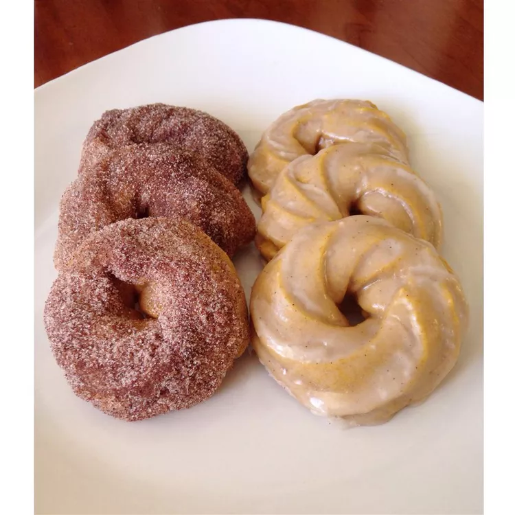

Yummy baked pumpkin donuts so easy they are great any day of the week.
*2 cups all-purpose flour*
*½ cup brown sugar*
*2 teaspoons pumpkin pie spice*
*1 ½ teaspoons baking powder*
*½ teaspoon salt*
*¼ teaspoon baking soda*
*¾ cup pumpkin puree*
*2 eggs*
*¼ cup milk*
*¼ cup butter, softened*